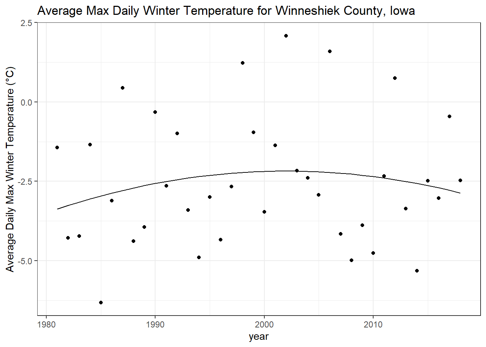
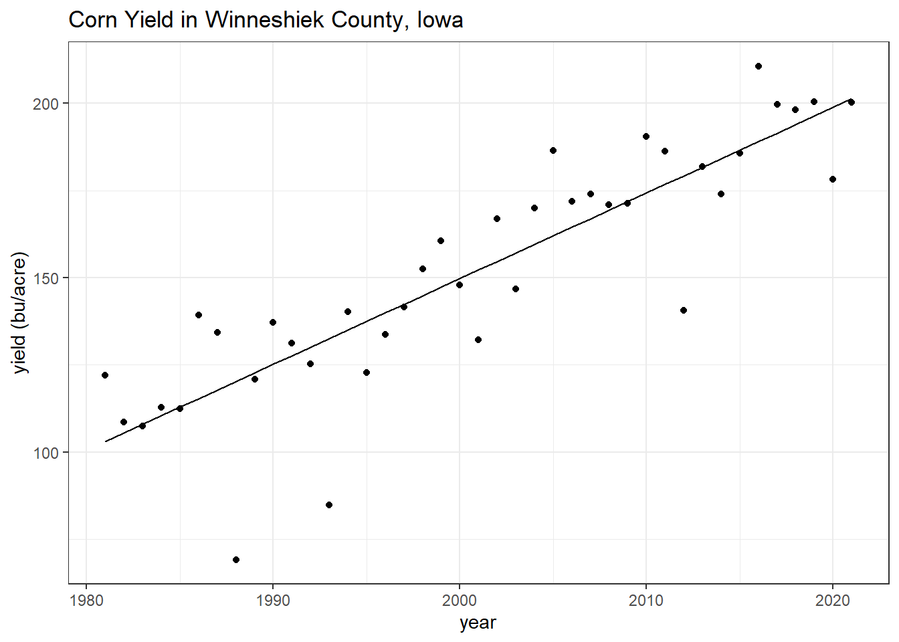
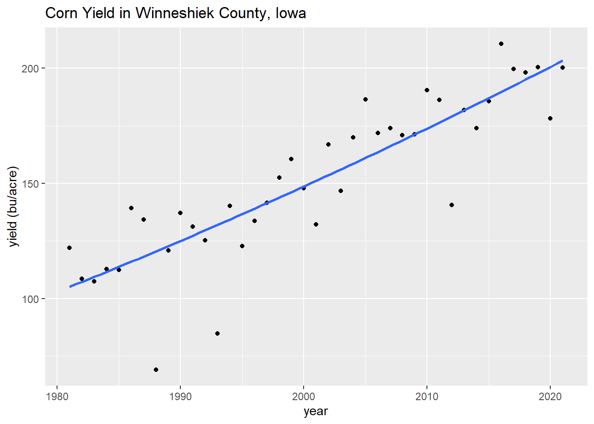
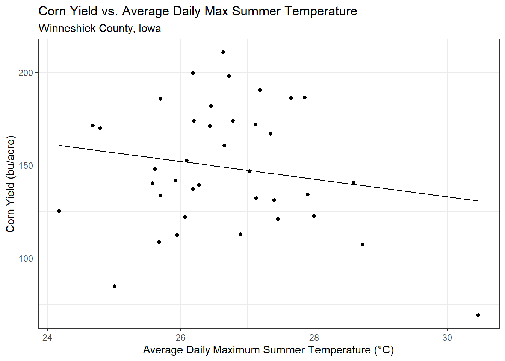
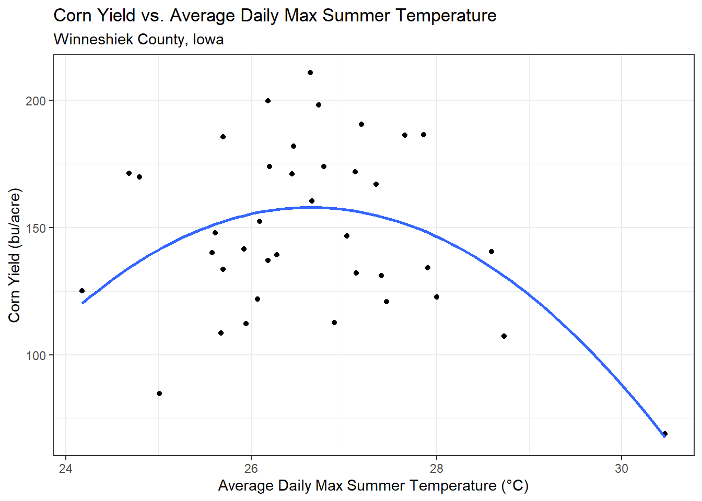
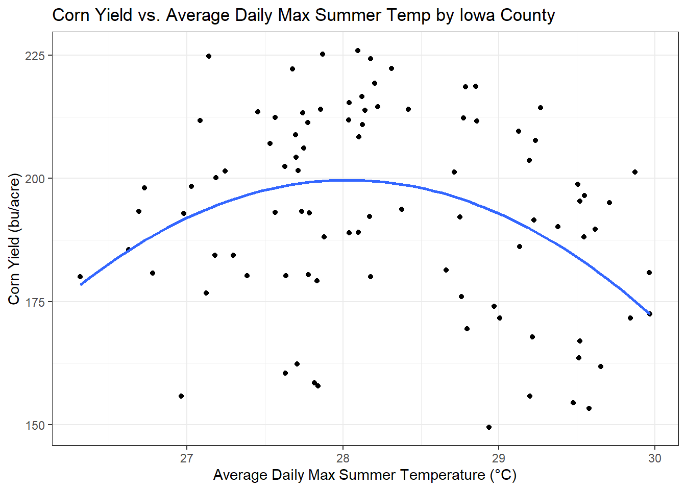
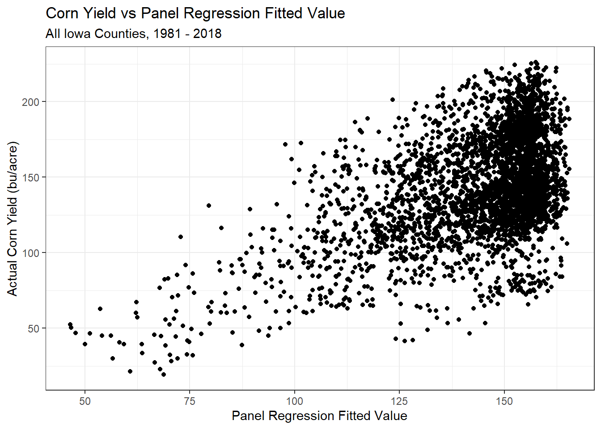
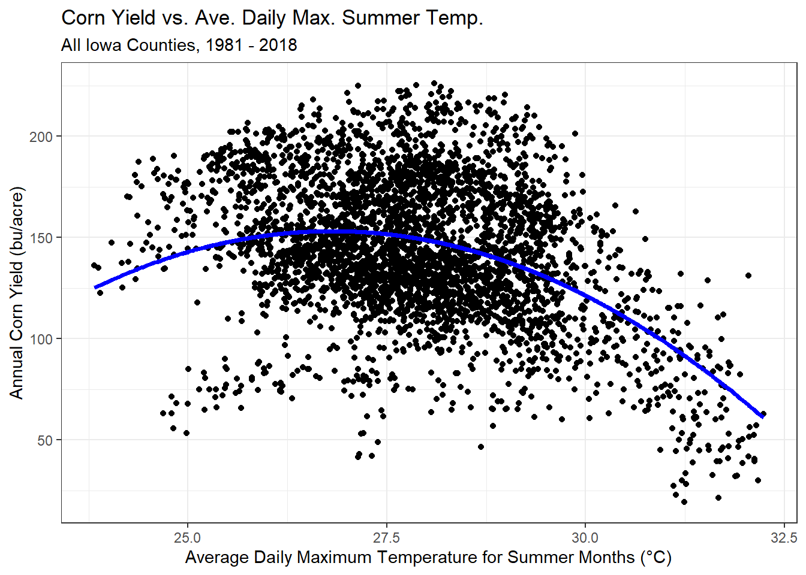
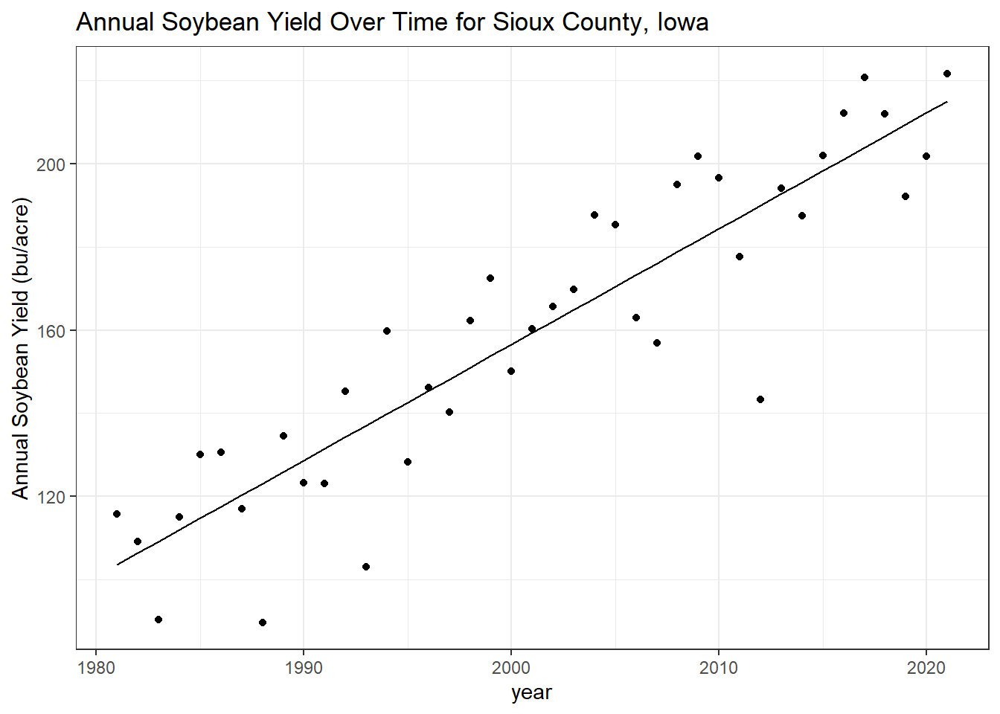

Chapter 7 Regressions
Assignment 6: Using PRISM weather data and USDA NASS crop data to learn multiple regression
7.1 Weather Data Analysis
7.1.1 Load the PRISM daily maximum temperature
# daily max temperature
# dimensions of the data: counties x days x years
prism <- readMat("data_reg/prismiowa.mat")
#look at all temp for county #1 in first year of data (1981):
t_1981_c1 <- prism$tmaxdaily.iowa[1,,1]
t_1981_c1[366] #(shows that 1981 was not a leap year.)## [1] NaNplot(1:366, t_1981_c1, type = "l")
ggplot()+
geom_line(mapping = aes(x=1:366, y=t_1981_c1))+
theme_bw()+
xlab("day of year") +
ylab("daily maximum temperature (°C)")+ #use Alt+0176 as keyboard shortcut to get the degree symbol!!!
ggtitle("Daily Maximum Temperature for County #1 in Iowa")
# assign dimension names to tmax matrix
dimnames(prism$tmaxdaily.iowa) <- list(prism$COUNTYFP,
1:366,
prism$years)
# converting 3D matrxi to a dataframe:
tmaxdf <- as.data.frame.table(prism$tmaxdaily.iowa)
# relabel the columns
colnames(tmaxdf) <- c("countyfp","doy","year","tmax")
tmaxdf <- tibble(tmaxdf) # tidying up7.1.2 Temperature Trends
7.1.2.1 Summer Temperature Trends: Winneshiek County
# converting some factors into dbl:
tmaxdf$doy <- as.numeric(tmaxdf$doy)
tmaxdf$year <- as.numeric(as.character(tmaxdf$year))
# creating variable for containing summer temp values of county 191
winnesummer <- tmaxdf %>%
filter(countyfp == 191 & doy >= 152 & doy <= 243) %>%
dplyr::group_by(year)%>%
dplyr::summarize(meantmax = mean(tmax))ggplot(winnesummer, mapping = aes(x = year, y = meantmax))+
geom_point()+
theme_bw() +
labs(x = "year", y = 'Maximum Temperature (°C)')+
ggtitle("Average Daily Max Summer Temperature for Winneshiek County, Iowa")
geom_smooth(method = lm)## geom_smooth: na.rm = FALSE, orientation = NA, se = TRUE
## stat_smooth: na.rm = FALSE, orientation = NA, se = TRUE, method = function (formula, data, subset, weights, na.action, method = "qr", model = TRUE, x = FALSE, y = FALSE, qr = TRUE, singular.ok = TRUE, contrasts = NULL, offset, ...)
## {
## ret.x <- x
## ret.y <- y
## cl <- match.call()
## mf <- match.call(expand.dots = FALSE)
## m <- match(c("formula", "data", "subset", "weights", "na.action", "offset"), names(mf), 0)
## mf <- mf[c(1, m)]
## mf$drop.unused.levels <- TRUE
## mf[[1]] <- quote(stats::model.frame)
## mf <- eval(mf, parent.frame())
## if (method == "model.frame")
## return(mf)
## else if (method != "qr")
## warning(gettextf("method = '%s' is not supported. Using 'qr'", method), domain = NA)
## mt <- attr(mf, "terms")
## y <- model.response(mf, "numeric")
## w <- as.vector(model.weights(mf))
## if (!is.null(w) && !is.numeric(w))
## stop("'weights' must be a numeric vector")
## offset <- model.offset(mf)
## mlm <- is.matrix(y)
## ny <- if (mlm)
## nrow(y)
## else length(y)
## if (!is.null(offset)) {
## if (!mlm)
## offset <- as.vector(offset)
## if (NROW(offset) != ny)
## stop(gettextf("number of offsets is %d, should equal %d (number of observations)", NROW(offset), ny), domain = NA)
## }
## if (is.empty.model(mt)) {
## x <- NULL
## z <- list(coefficients = if (mlm) matrix(NA, 0, ncol(y)) else numeric(), residuals = y, fitted.values = 0 * y, weights = w, rank = 0, df.residual = if (!is.null(w)) sum(w != 0) else ny)
## if (!is.null(offset)) {
## z$fitted.values <- offset
## z$residuals <- y - offset
## }
## }
## else {
## x <- model.matrix(mt, mf, contrasts)
## z <- if (is.null(w))
## lm.fit(x, y, offset = offset, singular.ok = singular.ok, ...)
## else lm.wfit(x, y, w, offset = offset, singular.ok = singular.ok, ...)
## }
## class(z) <- c(if (mlm) "mlm", "lm")
## z$na.action <- attr(mf, "na.action")
## z$offset <- offset
## z$contrasts <- attr(x, "contrasts")
## z$xlevels <- .getXlevels(mt, mf)
## z$call <- cl
## z$terms <- mt
## if (model)
## z$model <- mf
## if (ret.x)
## z$x <- x
## if (ret.y)
## z$y <- y
## if (!qr)
## z$qr <- NULL
## z
## }
## position_identitylm_summertmax <- lm(meantmax ~ year, winnesummer)
summary(lm_summertmax)##
## Call:
## lm(formula = meantmax ~ year, data = winnesummer)
##
## Residuals:
## Min 1Q Median 3Q Max
## -2.5189 -0.7867 -0.0341 0.6859 3.7415
##
## Coefficients:
## Estimate Std. Error t value Pr(>|t|)
## (Intercept) 41.57670 36.44848 1.141 0.262
## year -0.00747 0.01823 -0.410 0.684
##
## Residual standard error: 1.232 on 36 degrees of freedom
## Multiple R-squared: 0.004644, Adjusted R-squared: -0.02301
## F-statistic: 0.168 on 1 and 36 DF, p-value: 0.68447.1.2.2 Winter Temperatures trends: Winneshek County
# creating variable for containing winter temp values of county 191
winnewinter <- tmaxdf %>%
filter(countyfp == 191 & (doy <= 59 | doy >= 335) & !is.na(tmax)) %>%
dplyr::group_by(year)%>%
dplyr::summarize(meantmax = mean(tmax))ggplot(winnewinter, mapping = aes(x = year, y = meantmax))+
geom_point()+
theme_bw() +
labs(x = "year", y = "Average Daily Max Winter Temperature (°C)")+
ggtitle('Average Daily Max Temperature in Winter for Winneshiek County, Iowa')+
geom_smooth(method = lm)
lm_wintertmax <- lm(meantmax ~ year, winnewinter)
summary(lm_wintertmax)##
## Call:
## lm(formula = meantmax ~ year, data = winnewinter)
##
## Residuals:
## Min 1Q Median 3Q Max
## -3.5978 -1.4917 -0.3053 1.3778 4.5709
##
## Coefficients:
## Estimate Std. Error t value Pr(>|t|)
## (Intercept) -29.87825 60.48100 -0.494 0.624
## year 0.01368 0.03025 0.452 0.654
##
## Residual standard error: 2.045 on 36 degrees of freedom
## Multiple R-squared: 0.005652, Adjusted R-squared: -0.02197
## F-statistic: 0.2046 on 1 and 36 DF, p-value: 0.65377.1.3 Multiple Regression – Quadratic Time Trend
winnewinter$yearsq <- winnewinter$year^2
lm_wintertmaxquad <- lm(meantmax ~ year + yearsq, winnewinter)
#summary(lm_winntertmaxquad)
winnewinter$fitted <- lm_wintertmaxquad$fitted.values
ggplot(winnewinter)+
geom_point(mapping = aes(x = year, y = meantmax)) +
geom_line(mapping = aes(x = year, y = fitted))+
theme_bw() +
labs(x = "year", y = "Average Daily Max Winter Temperature (°C)")+
ggtitle("Average Max Daily Winter Temperature for Winneshiek County, Iowa")
7.1.4 Download NASS corn yield data
## set our API key with NASS
nassqs_auth(key = "6C0A99BB-3CB7-3E99-A699-B9DB7FDB8D16")
## parameters to query on
params <- list(commodity_desc = "CORN", util_practice_desc = "GRAIN",
prodn_practice_desc = "ALL PRODUCTION PRACTICES",
year__GE = 1981, state_alpha = "IA")
# download
cornyieldsall <- nassqs_yields(params)
#convert to numeric
cornyieldsall$county_ansi <- as.numeric(cornyieldsall$county_ansi)
cornyieldsall$yield <- as.numeric(cornyieldsall$Value)
cornyieldsall$year <- as.numeric(cornyieldsall$year)#clean and filter dataset
cornyields <- select(cornyieldsall,county_ansi,
county_name, yield, year)%>%
filter(!is.na(county_ansi) & !is.na(yield))
# make a tibble
cornyields <- tibble(cornyields)7.2 Assignment
7.2.1 Question 1a: Extract Winneshiek County corn yields, fit a linear time trend, make a plot. Is there a significant time trend?
# sifting out to have only the Winneshiek data
wnnshk_uncln <- cornyields %>%
filter(county_name == "WINNESHIEK")
#making sure that there aren't any rows with NAs:
wnnshk <- na.omit(wnnshk_uncln) # Fitting linear regression for time trend:
lm_wnnshk <- lm(yield ~ year, data = wnnshk)
wnnshk$linear <- lm_wnnshk$fitted.values
summary(lm_wnnshk)##
## Call:
## lm(formula = yield ~ year, data = wnnshk)
##
## Residuals:
## Min 1Q Median 3Q Max
## -51.163 -1.841 2.363 9.437 24.376
##
## Coefficients:
## Estimate Std. Error t value Pr(>|t|)
## (Intercept) -4763.290 448.286 -10.63 4.46e-13 ***
## year 2.457 0.224 10.96 1.77e-13 ***
## ---
## Signif. codes: 0 '***' 0.001 '**' 0.01 '*' 0.05 '.' 0.1 ' ' 1
##
## Residual standard error: 16.97 on 39 degrees of freedom
## Multiple R-squared: 0.7551, Adjusted R-squared: 0.7488
## F-statistic: 120.2 on 1 and 39 DF, p-value: 1.767e-13According the summary statistics for the linear regression model fitted to the yield ~ year data for Winneshiek, there is indeed a quite significant time trend. The slope has a value of 2.457 yield units increase per year, and the p-value for that slope is 1.77e-13.
# plotting yield ~ time along with linear regression:
ggplot(wnnshk) +
geom_point(mapping = aes(x = year, y = yield)) +
geom_line(mapping = aes(x = year, y = linear)) +
theme_bw() +
labs(x = "year", y = "yield (bu/acre)")+
ggtitle("Corn Yield in Winneshiek County, Iowa")
7.2.2 Question 1b: Fit a quadratic time trend (i.e., year + year^2) and make a plot. Is there evidence for slowing yield growth?
## Fitting quadratic time trend
wnnshk$yearsq <- wnnshk$year^2
qd_wnnshk <- lm(yield ~ (year + yearsq), data = wnnshk)
wnnshk$quadratic <- qd_wnnshk$fitted.values
summary(qd_wnnshk)##
## Call:
## lm(formula = yield ~ (year + yearsq), data = wnnshk)
##
## Residuals:
## Min 1Q Median 3Q Max
## -51.384 -3.115 1.388 9.743 25.324
##
## Coefficients:
## Estimate Std. Error t value Pr(>|t|)
## (Intercept) 2.583e+04 8.580e+04 0.301 0.765
## year -2.812e+01 8.576e+01 -0.328 0.745
## yearsq 7.641e-03 2.143e-02 0.357 0.723
##
## Residual standard error: 17.17 on 38 degrees of freedom
## Multiple R-squared: 0.7559, Adjusted R-squared: 0.7431
## F-statistic: 58.84 on 2 and 38 DF, p-value: 2.311e-12## plotting quadratic transform:
ggplot(wnnshk) +
geom_point(mapping = aes(x = year, y = yield)) +
geom_smooth(mapping = aes(x = year, y = quadratic))+
labs(x = "year", y = "yield (bu/acre)")+
ggtitle('Corn Yield in Winneshiek County, Iowa')## `geom_smooth()` using method = 'loess' and formula 'y ~ x'
In the summary statistics for the quadratic regression model, we see that the coefficient for yearsq is 7.641e-03, a positive value, but it’s p-value is large at 0.723. Due to this large p-value, we conclude that the quadratic regression model does not fit the data well. We do not have evidence that yields are either slowing or growing with each year.
If the p-value were small (< 0.05), we would conclude that yields are growing with each year, due to the fact that the yearsq coefficient is positive – meaning that the model is U-shaped rather than n-shaped – and that the data would clearly be the right-side of the U (as the plot makes obvious).
7.2.3 Question 2 – Time Series: Let’s analyze the relationship between temperature and yields for the Winneshiek County time series. Use data on yield and summer avg Tmax. Is adding year or Tmax^2 to your model helpful? Make a plot and interpret the results.
# Joining the yield data to the temp data.
## (Note: temp data ends at 2018 and yield goes to 2021.)
wnnshk_ty <- left_join(winnesummer, wnnshk, by = 'year')%>%
filter(!is.na(yield), !is.na(meantmax))7.2.3.1 First Looking at the Linear Model for Yield ~ MeanTmax
# Creating linear model for analyzing Yield ~ meanTmax:
lm_w_ty <- lm(yield ~ meantmax, data = wnnshk_ty)
wnnshk_ty$lin_ty <- lm_w_ty$fitted.values
# summary stats for linear model
summary(lm_w_ty)##
## Call:
## lm(formula = yield ~ meantmax, data = wnnshk_ty)
##
## Residuals:
## Min 1Q Median 3Q Max
## -71.96 -19.85 -3.19 24.64 61.72
##
## Coefficients:
## Estimate Std. Error t value Pr(>|t|)
## (Intercept) 275.876 118.335 2.331 0.0255 *
## meantmax -4.763 4.438 -1.073 0.2902
## ---
## Signif. codes: 0 '***' 0.001 '**' 0.01 '*' 0.05 '.' 0.1 ' ' 1
##
## Residual standard error: 32.88 on 36 degrees of freedom
## Multiple R-squared: 0.03101, Adjusted R-squared: 0.004098
## F-statistic: 1.152 on 1 and 36 DF, p-value: 0.2902Note: The summary statistics for the linear model prove that it is not a good fit for this data. The p-value for the coefficient of meantmax is 0.2902, which is much greater than 0.05.
# plotting linear model
ggplot(wnnshk_ty) +
geom_point(mapping = aes(x = meantmax, y = yield)) +
geom_line(mapping = aes(x = meantmax, y = lin_ty)) +
theme_bw() +
labs(x = "Average Daily Maximum Summer Temperature (°C)", y = "Corn Yield (bu/acre)")+
ggtitle("Corn Yield vs. Average Daily Max Summer Temperature",
subtitle = "Winneshiek County, Iowa")
7.2.3.2 Second, Examining the Quadratic Model for Yield ~ (MeanTmax^2 + MeanTmax)
# Creating quadratic model for analyzing Yield ~ (Tmax^2 + Tmax)
## first creating meantmaxsq data:
wnnshk_ty$meantmaxsq <- wnnshk_ty$meantmax^2
## now generating quadratic model:
qd_w_ty <- lm(yield ~ (meantmax + meantmaxsq), data = wnnshk_ty)
## pulling fitted values from quadratic model and adding to dataframe:
wnnshk_ty$qd_ty <- qd_w_ty$fitted.values
## looking at the quadratic model's summary statistics:
summary(qd_w_ty)##
## Call:
## lm(formula = yield ~ (meantmax + meantmaxsq), data = wnnshk_ty)
##
## Residuals:
## Min 1Q Median 3Q Max
## -56.587 -22.262 -0.982 22.409 52.798
##
## Coefficients:
## Estimate Std. Error t value Pr(>|t|)
## (Intercept) -4223.604 1446.639 -2.920 0.00609 **
## meantmax 328.918 107.068 3.072 0.00410 **
## meantmaxsq -6.173 1.979 -3.119 0.00362 **
## ---
## Signif. codes: 0 '***' 0.001 '**' 0.01 '*' 0.05 '.' 0.1 ' ' 1
##
## Residual standard error: 29.5 on 35 degrees of freedom
## Multiple R-squared: 0.2417, Adjusted R-squared: 0.1984
## F-statistic: 5.579 on 2 and 35 DF, p-value: 0.007887# plotting quadratic model
ggplot(wnnshk_ty)+
geom_point(mapping = aes(x = meantmax, y = yield)) +
geom_smooth(mapping = aes(x = meantmax, y = qd_ty))+
theme_bw()+
labs(x = "Average Daily Max Summer Temperature (°C)",
y = "Corn Yield (bu/acre)")+
ggtitle("Corn Yield vs. Average Daily Max Summer Temperature",
subtitle = "Winneshiek County, Iowa")## `geom_smooth()` using method = 'loess' and formula 'y ~ x'
The summary statistics for the quadratic regression model for Yield ~ (meantmax^2 + meantmax) shows that the quadratic model is indeed helpful for understanding the trend of the data. We can tell this by looking at the p-values for coefficients of meantmax, meantmaxsq, and the intercept, all of which are quite small and substantially lower than 0.05.
The plot of this quadratic model, as shown above, clearly displays a negative parabolic curve (which regression model’s summary statistics also indicated). This type of relationship was to be expected, as optimum temperatures for maximizing yields must be neither too low nor too high.
The quadratic model for this data should be accepted, while the linear model should be rejected.
7.2.4 Question 3 – Cross-Section: Analyze the relationship between temperature and yield across all counties in 2018. Is there a relationship? Interpret the results.
# Filtering down the temperature data to only what we need...
t_18 <- tmaxdf %>%
filter(year == 2018, (doy > 151 & doy < 244)) %>%
# ...then grouping by county...
dplyr::group_by(countyfp) %>%
# ...and calculating meanTmax for each county
dplyr::summarise(meantmax = mean(tmax))
# going ahead and converting countyfp to numeric:
t_18$countyfp <- as.numeric(as.character(t_18$countyfp))# Filtering down cornyields data to only 2018
cy_18 <- cornyields %>%
filter(year == 2018,
# making sure all NA's are gone
!is.na(yield), !is.na(county_name),!is.na(county_ansi)) %>%
# creating countyfp column in preparation for joining
mutate(countyfp = county_ansi)# Joining t_18 to cy_18, and selecting down to meantmax, yield, countyfp
tcy_18 <- left_join(cy_18,t_18, by = "countyfp") %>%
select(countyfp, meantmax, yield) %>%
filter(!is.na(countyfp),!is.na(meantmax),!is.na(yield))# Creating quadratic regression model
## calculating meantmaxsq values
tcy_18$meantmaxsq <- tcy_18$meantmax^2
## creating quadratic model
qd_tcy_18 <- lm(yield ~ (meantmaxsq + meantmax), tcy_18)
## adding model's values to tcy_18 dataframe
tcy_18$qd_yvalues <- qd_tcy_18$fitted.values
summary(qd_tcy_18)##
## Call:
## lm(formula = yield ~ (meantmaxsq + meantmax), data = tcy_18)
##
## Residuals:
## Min 1Q Median 3Q Max
## -44.221 -15.399 5.007 14.541 30.879
##
## Coefficients:
## Estimate Std. Error t value Pr(>|t|)
## (Intercept) -5501.602 1860.830 -2.957 0.00397 **
## meantmaxsq -7.256 2.321 -3.126 0.00239 **
## meantmax 406.789 131.493 3.094 0.00263 **
## ---
## Signif. codes: 0 '***' 0.001 '**' 0.01 '*' 0.05 '.' 0.1 ' ' 1
##
## Residual standard error: 18.75 on 90 degrees of freedom
## Multiple R-squared: 0.1317, Adjusted R-squared: 0.1124
## F-statistic: 6.827 on 2 and 90 DF, p-value: 0.001736# Saving fitted values for plotting# Plotting Yield ~ MeanTmax for 2018 (all Iowa counties)
ggplot(tcy_18) +
geom_point(mapping = aes(x = meantmax, y = yield))+
geom_smooth(mapping = aes(x = meantmax, y = qd_yvalues))+
theme_bw() +
labs(x = "Average Daily Max Summer Temperature (°C)",
y = "Corn Yield (bu/acre)",
title = "Corn Yield vs. Average Daily Max Summer Temp by Iowa County")## `geom_smooth()` using method = 'loess' and formula 'y ~ x'
We would expect that the relationship between mean summer maximum daily temperatures and corn yields across all Iowa counties for the year of 2018 would be very similar to the relationship between the same variables for Winneshiek County across all years (shown in the previous question). As such, we begin by fitting a quadratic model.
In the summary statistics for the quadratic regression model for (corn yield) ~ (meantmax^2 + meantmax), shown above, we can see that p-values for all coefficients are substantially less than 0.05. This indicates that the quadratic model does indeed fit well to the data. Further, we see that this model indicates that corn yields can be expected to be highest when the average maximum daily temperature for the summer months is 28°C.
7.2.5 Question 4 – Panel:
One way to leverage multiple time series is to group all data into what is called a “panel” regression. Convert the county ID code (“countyfp” or “county_ansi”) into factor using as.factor, then include this variable in a regression using all counties’ yield and summer temperature data.
How does the significance of your temperature coefficients (Tmax, Tmax^2) change?
Make a plot comparing actual and fitted yields and interpret the results of your model.
- Student’s question: are you asking me to create a plot that has actual yields on the y-axis and fitted yield on the x-axis? I’m not sure what you’re asking. It seems to me that what we really want is model that helps predict corn yields across all counties…
## getting the temperature data:
### Filtering down the temperature data to only what we need...
t <- tmaxdf %>%
filter(doy > 151 & doy < 244) %>%
### ...then grouping by county...
dplyr::group_by(countyfp,year) %>%
### ...and calculating meanTmax for each county...
dplyr::summarise(meantmax = mean(tmax)) %>%
### ...adding meantmaxsq in prep for quadratic regression model...
mutate(meantmaxsq = meantmax^2)## `summarise()` has grouped output by 'countyfp'. You can override using the
## `.groups` argument.## going ahead and converting countyfp to numeric:
t$countyfp <- as.numeric(as.character(t$countyfp))# Getting the Yield Data
cy <- cornyields %>%
# making sure all NA's are gone
filter(!is.na(yield), !is.na(county_name),!is.na(county_ansi)) %>%
# creating countyfp column in preparation for joining
mutate(countyfp = county_ansi)# Joining Temperature Data to Yield Data by county and year
tcy <- inner_join(cy,t,by = c("countyfp", "year"))
## converting countyfp to factor (as instructed)
tcy$countyfp <- as.factor(tcy$countyfp)
## cleaning out unneeded columns:
tcy <- select(tcy,-c("county_ansi", "county_name"))
## reordering columns to proper positions:
tcy <- tcy[,c(3,2,1,4,5)]7.2.5.1 First attempting the panel regression as instructed, without using the panel regression function
# First creating lm() that does NOT factor in countyfp, but does factor both meantmax and meantmaxsq:
panel_lm_NO_cfp <- lm(yield ~ (meantmaxsq + meantmax), data = tcy)
summary(panel_lm_NO_cfp)##
## Call:
## lm(formula = yield ~ (meantmaxsq + meantmax), data = tcy)
##
## Residuals:
## Min 1Q Median 3Q Max
## -113.151 -21.982 -2.794 24.860 82.006
##
## Coefficients:
## Estimate Std. Error t value Pr(>|t|)
## (Intercept) -2098.6219 139.4315 -15.05 <2e-16 ***
## meantmaxsq -3.1665 0.1769 -17.90 <2e-16 ***
## meantmax 168.9590 9.9402 17.00 <2e-16 ***
## ---
## Signif. codes: 0 '***' 0.001 '**' 0.01 '*' 0.05 '.' 0.1 ' ' 1
##
## Residual standard error: 31.55 on 3745 degrees of freedom
## Multiple R-squared: 0.1947, Adjusted R-squared: 0.1943
## F-statistic: 452.8 on 2 and 3745 DF, p-value: < 2.2e-16# Creating lm() that factors in meantmax, meantmaxsq, AND countyfp
panel_lm_W_cfp <- lm(yield ~ (meantmaxsq + meantmax + countyfp), data = tcy)
summary(panel_lm_W_cfp)##
## Call:
## lm(formula = yield ~ (meantmaxsq + meantmax + countyfp), data = tcy)
##
## Residuals:
## Min 1Q Median 3Q Max
## -95.088 -21.438 -3.026 23.570 77.941
##
## Coefficients:
## Estimate Std. Error t value Pr(>|t|)
## (Intercept) -2102.2327 139.2946 -15.092 < 2e-16 ***
## meantmaxsq -3.1324 0.1758 -17.820 < 2e-16 ***
## meantmax 167.9699 9.8950 16.975 < 2e-16 ***
## countyfp3 -4.5577 7.0388 -0.648 0.517347
## countyfp5 1.9797 7.0743 0.280 0.779612
## countyfp7 -19.1369 7.0864 -2.701 0.006955 **
## countyfp9 4.3024 7.0416 0.611 0.541240
## countyfp11 6.2752 7.0459 0.891 0.373195
## countyfp13 6.2028 7.0520 0.880 0.379147
## countyfp15 14.3129 7.0414 2.033 0.042157 *
## countyfp17 10.2595 7.0568 1.454 0.146076
## countyfp19 6.6549 7.0596 0.943 0.345912
## countyfp21 7.5427 7.0503 1.070 0.284760
## countyfp23 8.0045 7.0493 1.135 0.256242
## countyfp25 9.3627 7.0468 1.329 0.184048
## countyfp27 8.8039 7.0426 1.250 0.211348
## countyfp29 6.0858 7.0389 0.865 0.387315
## countyfp31 14.9921 7.0443 2.128 0.033381 *
## countyfp33 3.7400 7.0668 0.529 0.596677
## countyfp35 12.8689 7.0455 1.827 0.067848 .
## countyfp37 1.3837 7.0714 0.196 0.844876
## countyfp39 -24.9874 7.0863 -3.526 0.000427 ***
## countyfp41 5.5213 7.0521 0.783 0.433716
## countyfp43 7.9986 7.0648 1.132 0.257632
## countyfp45 9.7142 7.0455 1.379 0.168043
## countyfp47 5.5829 7.0436 0.793 0.428054
## countyfp49 10.5962 7.0391 1.505 0.132323
## countyfp51 -14.6474 7.0887 -2.066 0.038872 *
## countyfp53 -16.7641 7.0865 -2.366 0.018051 *
## countyfp55 8.6421 7.0667 1.223 0.221435
## countyfp57 10.8382 7.0391 1.540 0.123719
## countyfp59 2.0837 7.0635 0.295 0.768011
## countyfp61 9.1371 7.0690 1.293 0.196245
## countyfp63 6.4115 7.0706 0.907 0.364579
## countyfp65 6.5576 7.0722 0.927 0.353862
## countyfp67 3.8270 7.0595 0.542 0.587775
## countyfp69 10.2572 7.0536 1.454 0.145983
## countyfp71 15.9700 7.0526 2.264 0.023608 *
## countyfp73 14.2209 7.0396 2.020 0.043445 *
## countyfp75 10.3933 7.0506 1.474 0.140543
## countyfp77 3.0582 7.0392 0.434 0.663988
## countyfp79 12.1993 7.0442 1.732 0.083392 .
## countyfp81 7.8892 7.0692 1.116 0.264496
## countyfp83 13.0042 7.0463 1.846 0.065040 .
## countyfp85 7.0324 7.0390 0.999 0.317828
## countyfp87 5.8050 7.0396 0.825 0.409641
## countyfp89 0.9492 7.1084 0.134 0.893781
## countyfp91 8.8848 7.0596 1.259 0.208279
## countyfp93 10.8610 7.0456 1.542 0.123276
## countyfp95 6.7101 7.0403 0.953 0.340600
## countyfp97 -2.2777 7.0533 -0.323 0.746768
## countyfp99 13.8935 7.0402 1.973 0.048519 *
## countyfp101 2.1063 7.0445 0.299 0.764958
## countyfp103 3.8916 7.0404 0.553 0.580470
## countyfp105 6.8541 7.0503 0.972 0.331025
## countyfp107 2.4290 7.0390 0.345 0.730052
## countyfp109 11.2195 7.0616 1.589 0.112188
## countyfp111 3.2019 7.0439 0.455 0.649452
## countyfp113 5.5167 7.0475 0.783 0.433799
## countyfp115 8.0182 7.0400 1.139 0.254798
## countyfp117 -23.7701 7.1360 -3.331 0.000874 ***
## countyfp119 8.4973 7.0446 1.206 0.227815
## countyfp121 -2.7616 7.0390 -0.392 0.694843
## countyfp123 8.2674 7.0389 1.175 0.240260
## countyfp125 2.0919 7.0389 0.297 0.766339
## countyfp127 13.1465 7.0469 1.866 0.062181 .
## countyfp129 9.7388 7.1425 1.364 0.172806
## countyfp131 6.9486 7.0897 0.980 0.327099
## countyfp133 1.2117 7.0395 0.172 0.863346
## countyfp135 -16.6425 7.0863 -2.349 0.018900 *
## countyfp137 6.6056 7.0404 0.938 0.348183
## countyfp139 8.2715 7.0389 1.175 0.240027
## countyfp141 13.1679 7.0506 1.868 0.061894 .
## countyfp143 7.9469 7.0654 1.125 0.260765
## countyfp145 0.4131 7.0406 0.059 0.953217
## countyfp147 6.1297 7.0527 0.869 0.384835
## countyfp149 6.7353 7.0404 0.957 0.338798
## countyfp151 10.3788 7.0476 1.473 0.140925
## countyfp153 14.0238 7.0389 1.992 0.046410 *
## countyfp155 10.4059 7.0864 1.468 0.142075
## countyfp157 10.1606 7.0397 1.443 0.149014
## countyfp159 -20.5978 7.0389 -2.926 0.003451 **
## countyfp161 8.4110 7.0478 1.193 0.232778
## countyfp163 15.5360 7.0426 2.206 0.027446 *
## countyfp165 6.9179 7.0417 0.982 0.325957
## countyfp167 14.7911 7.0423 2.100 0.035770 *
## countyfp169 10.2395 7.0458 1.453 0.146233
## countyfp171 8.7662 7.0459 1.244 0.213519
## countyfp173 -14.5056 7.0868 -2.047 0.040744 *
## countyfp175 -12.5580 7.0863 -1.772 0.076452 .
## countyfp177 -2.8371 7.0524 -0.402 0.687493
## countyfp179 -3.5740 7.0874 -0.504 0.614105
## countyfp181 -2.0199 7.0389 -0.287 0.774154
## countyfp183 10.8835 7.0394 1.546 0.122169
## countyfp185 -22.9077 7.0863 -3.233 0.001237 **
## countyfp187 13.1211 7.0472 1.862 0.062700 .
## countyfp189 7.5593 7.0757 1.068 0.285441
## countyfp191 4.0826 7.0867 0.576 0.564584
## countyfp193 2.3508 7.0395 0.334 0.738436
## countyfp195 5.9103 7.0954 0.833 0.404908
## countyfp197 10.4404 7.0518 1.481 0.138817
## ---
## Signif. codes: 0 '***' 0.001 '**' 0.01 '*' 0.05 '.' 0.1 ' ' 1
##
## Residual standard error: 30.68 on 3647 degrees of freedom
## Multiple R-squared: 0.2585, Adjusted R-squared: 0.2382
## F-statistic: 12.71 on 100 and 3647 DF, p-value: < 2.2e-16** Based on the results I’m seeing, I believe that I must be making some kind of mistake, but I’m not sure what that could be. I think there should be a difference in the p-values for the coefficients, but I don’t see any…**
From examining the two different linear regression models, one factoring in countyfp and one not, that including the countyfp as a factor in the regression formula did not affect the significance of the temperature coefficients to any detectable degree. However, including countyfp did slightly alter the values of the coefficients. With the inclusion of countyfp as a factor in the linear regression, meantmax coefficient changed from -3.1665 to -3.1324 while meantmaxsq changed from 168.9590 to 167.9699.
7.2.5.2 Plotting Actual Yield vs. Fitted Yield
# Trying to obtain fitted values from the panel regression:
tcy$p_lm_fit2 <- panel_lm_W_cfp$fitted.values# Plotting yield vs p_lm_fit2
ggplot(tcy) +
geom_point(mapping = aes(x = p_lm_fit2, y = yield))+
theme_bw()+
labs(title = "Corn Yield vs Panel Regression Fitted Value",
subtitle = "All Iowa Counties, 1981 - 2018",
x = "Panel Regression Fitted Value",
y = "Actual Corn Yield (bu/acre)")
7.2.5.3 This is the Student Trying to Leverage the Panel Regression Funciton plm() Instead
7.2.5.3.1 First Determining whether Fixed Effects or Random Effects Model is Appropriate
# First testing the the pooled OLS model:
plmtest(yield ~ (meantmaxsq + meantmax),
data = tcy,
effect = "twoways",
type = "ghm")##
## Lagrange Multiplier Test - two-ways effects (Gourieroux, Holly and
## Monfort) for unbalanced panels
##
## data: yield ~ (meantmaxsq + meantmax)
## chibarsq = 113671, df0 = 0.00, df1 = 1.00, df2 = 2.00, w0 = 0.25, w1 =
## 0.50, w2 = 0.25, p-value < 2.2e-16
## alternative hypothesis: significant effectsThe p-value for this GHM test is very small, and we therefore reject the null hypothesis that there are no significant effects. To be honest, I don’t understand what this test is really testing. I just know that we’re supposed to run prior to running a panel regression, according to Columbia University: (https://blogs.cul.columbia.edu/spotlights/2018/11/16/introduction-to-r-plm-package-3/)
#running the Hausman test to determine whether fixed or random effects model is best
phtest(yield ~ (meantmaxsq + meantmax),
data = tcy,
model = c("within","random"))##
## Hausman Test
##
## data: yield ~ (meantmaxsq + meantmax)
## chisq = 14.986, df = 2, p-value = 0.000557
## alternative hypothesis: one model is inconsistentThe p-value for this Hausman test is small, therefore we conclude that fixed effects model is best.
7.2.5.4 Continuing wiht Fixed Effects model
# Performing fixed effects panel regression
p_tcy = pdata.frame(tcy, index = c("countyfp", "year"))
pan_reg_fe <- plm(yield ~ (meantmaxsq + meantmax),
data = p_tcy,
model = "within")
### saving fitted values to p_tcy
p_tcy$fe <- pan_reg_fe$model$yield
### also getting the residuals
p_tcy$residuals <- pan_reg_fe$residuals
### TRYING FE - RESIDUALS
p_tcy$fitted <- p_tcy$fe - p_tcy$residuals
summary(pan_reg_fe)## Oneway (individual) effect Within Model
##
## Call:
## plm(formula = yield ~ (meantmaxsq + meantmax), data = p_tcy,
## model = "within")
##
## Unbalanced Panel: n = 99, T = 36-38, N = 3748
##
## Residuals:
## Min. 1st Qu. Median 3rd Qu. Max.
## -95.0881 -21.4381 -3.0255 23.5699 77.9414
##
## Coefficients:
## Estimate Std. Error t-value Pr(>|t|)
## meantmaxsq -3.13244 0.17578 -17.820 < 2.2e-16 ***
## meantmax 167.96992 9.89502 16.975 < 2.2e-16 ***
## ---
## Signif. codes: 0 '***' 0.001 '**' 0.01 '*' 0.05 '.' 0.1 ' ' 1
##
## Total Sum of Squares: 4119000
## Residual Sum of Squares: 3433100
## R-Squared: 0.16652
## Adj. R-Squared: 0.14366
## F-statistic: 364.307 on 2 and 3647 DF, p-value: < 2.22e-16NOTE: In comparing the coefficient results on the panel regression that used the plm() function (immediately above) to that which used the lm() function (further above), we see that the coefficients of meantmax and meantmaxsq are essentially exactly the same.
7.2.5.5 Now using the lm() function instead
# TRYING TO FIGURE OUT HOW TO PLOT "actual and fitted yields and interpret the results of your model."
## WHAT IF I DO A REGRESSION ON TOP OF THE plm to get a smooth line?
### I think that this is like completing a regression among all of the fitted values.
reg_panreg <- lm(fitted ~ (meantmaxsq + meantmax), p_tcy)
p_tcy$reg_panreg_fit <- reg_panreg$fitted.values
summary(reg_panreg)##
## Call:
## lm(formula = fitted ~ (meantmaxsq + meantmax), data = p_tcy)
##
## Residuals:
## Min 1Q Median 3Q Max
## -31.401 -2.232 2.084 5.351 15.635
##
## Coefficients:
## Estimate Std. Error t value Pr(>|t|)
## (Intercept) -2098.6219 39.2415 -53.48 <2e-16 ***
## meantmaxsq -3.1665 0.0498 -63.59 <2e-16 ***
## meantmax 168.9590 2.7976 60.40 <2e-16 ***
## ---
## Signif. codes: 0 '***' 0.001 '**' 0.01 '*' 0.05 '.' 0.1 ' ' 1
##
## Residual standard error: 8.88 on 3745 degrees of freedom
## Multiple R-squared: 0.7533, Adjusted R-squared: 0.7531
## F-statistic: 5717 on 2 and 3745 DF, p-value: < 2.2e-16Interestingly enough, this regression of the panel regression produces the same coefficient values as the linear regression that did not factor in the countyfp.
This is likely wrong. But if we take the intercept value from the regression that did not include countyfp as a factor, and use the coefficients from the panel regression that did include countyfp as a factor we get the following equation for yield as a function of meantmax:
yield = -3.13244meantmaxsq + 167.96992meantmax -2098.621
It would be interesting to plot this function over the entire data.
7.2.5.6 Plotting Above Model Determined by Panel Regression Over All Data
# Creating a column on tcy that is this function shown above:
tcy$experimental_fit <- (-3.13244*tcy$meantmaxsq) + (167.96992*tcy$meantmax) - 2098.621# Plotting the data and the above model:
ggplot(data = tcy)+
geom_point(mapping = aes(x = meantmax, y = yield)) +
geom_line(mapping = aes(x = meantmax, y = experimental_fit),
color = "blue",
size = 1.25)+
theme_bw() +
labs(x = "Average Daily Maximum Temperature for Summer Months (°C)",
y = "Annual Corn Yield (bu/acre)",
title = "Corn Yield vs. Ave. Daily Max. Summer Temp.",
subtitle = "All Iowa Counties, 1981 - 2018")
7.2.6 Question 5 – Soybeans: Download NASS data on soybean yields and explore either a time series relationship for a given county, the cross-sectional relationship for a given year, or a panel across all counties and years.
7.2.6.1 Downloading Soybean Data
## set our API key with NASS
nassqs_auth(key = "6C0A99BB-3CB7-3E99-A699-B9DB7FDB8D16")
## parameters to query on
params2 <- list(commodity_desc = "SOYBEANS", statisticcat_desc = "PRODUCTION",
prodn_practice_desc = "ALL PRODUCTION PRACTICES",
year__GE = 1981, state_alpha = "IA")
# download
sbyieldsall <- nassqs_yields(params2)
#convert to numeric
sbyieldsall$county_ansi <- as.numeric(sbyieldsall$county_ansi)
sbyieldsall$yield <- as.numeric(sbyieldsall$Value)#clean and filter dataset
sbyields <- select(sbyieldsall,county_ansi,
county_name, yield, year)%>%
filter(!is.na(county_ansi) & !is.na(yield))
# make a tibble
sbyields <- tibble(cornyields) %>%
dplyr::group_by(county_name) %>%
dplyr::mutate(datapoints = n())%>%
arrange(-datapoints)7.2.6.2 Looking at the Trend of Soybeans Over Time in Sioux County
# sifting out to have only the Winneshiek data
sx_uncln <- sbyields %>%
filter(county_name == "SIOUX")
#making sure that there aren't any rows with NAs:
sx <- na.omit(sx_uncln) # Fitting linear regression for time trend:
lm_sx <- lm(yield ~ year, data = sx)
sx$linear <- lm_sx$fitted.values
summary(lm_sx)##
## Call:
## lm(formula = yield ~ year, data = sx)
##
## Residuals:
## Min 1Q Median 3Q Max
## -46.765 -8.374 3.122 12.106 20.091
##
## Coefficients:
## Estimate Std. Error t value Pr(>|t|)
## (Intercept) -5413.9462 420.0761 -12.89 1.23e-15 ***
## year 2.7852 0.2099 13.27 4.86e-16 ***
## ---
## Signif. codes: 0 '***' 0.001 '**' 0.01 '*' 0.05 '.' 0.1 ' ' 1
##
## Residual standard error: 15.9 on 39 degrees of freedom
## Multiple R-squared: 0.8186, Adjusted R-squared: 0.814
## F-statistic: 176 on 1 and 39 DF, p-value: 4.863e-16According the summary statistics for the linear regression model fitted to the yield ~ year data for Sioux County, there is indeed a quite significant time trend. The slope has a value of 2.7852 yield units increase per year, and the p-value for that slope is 4.86e-16.
# plotting yield ~ time along with linear regression:
ggplot(sx) +
geom_point(mapping = aes(x = year, y = yield)) +
geom_line(mapping = aes(x = year, y = linear)) +
theme_bw() +
labs(x = "year", y = "Annual Soybean Yield (bu/acre)")+
ggtitle("Annual Soybean Yield Over Time for Sioux County, Iowa")
7.2.6.3 Examining whether rate of yield is slowing or decreasing.
## Fitting quadratic time trend
sx$yearsq <- sx$year^2
qd_sx <- lm(yield ~ (year + yearsq), data = sx)
sx$quadratic <- qd_sx$fitted.values
summary(qd_sx)##
## Call:
## lm(formula = yield ~ (year + yearsq), data = sx)
##
## Residuals:
## Min 1Q Median 3Q Max
## -46.845 -8.544 3.730 11.856 19.769
##
## Coefficients:
## Estimate Std. Error t value Pr(>|t|)
## (Intercept) -2.239e+04 8.049e+04 -0.278 0.782
## year 1.975e+01 8.045e+01 0.245 0.807
## yearsq -4.239e-03 2.010e-02 -0.211 0.834
##
## Residual standard error: 16.1 on 38 degrees of freedom
## Multiple R-squared: 0.8188, Adjusted R-squared: 0.8093
## F-statistic: 85.88 on 2 and 38 DF, p-value: 8.002e-15We do not find evidence that yield is either slowing or growing with each year.